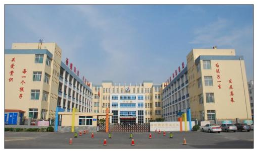

学校是公共场所，因人流量大、密集度高、流动快，这类所场为很多有害生物牺息和繁衍提供了便利条件，因此，从专业学校杀虫灭鼠公司的角度来讲，应该遵循从源头控制的原则，更多的需要从日
常工作中采取预防措施，尽量少用或者不使用化学药剂，同时做好内外部垃圾的清理，减少有害生物的快速传播。
虫害危害
1、.虫鼠害尸体或排泄物可造成食堂食品的污染，给师生的身体健康带来巨大威胁。
2、.鼠类咬噬电线造成设备的直接损失，同时存在同时存在由于停电直接影响部份课程无法正常进行的风险。
3、蟑螂也称为电脑害虫，可咬断电脑内的线路造成电脑故障，后果不堪设想。
4、学校周围环境中的虫鼠害易携带致病微生物，可传播鼠疫、痢疾、登革热等疾病。
解决方案
学校由于场所特殊，且为公共场所，安全性要求非常高，对此，时代卫士将根据学校现场情况，采取预防为主，治理为辅的原则，防即环境防御、化学防御；利用时代卫士积累的特有虫鼠害防制方法，实现高效治理、安全控制，减少化学药剂来带的负面影响及二次污染。
【各类有害生物防制方案】
一、老鼠解决方案
1、前期在本项目食堂等鼠类高发区域建筑物外围安装全天候鼠类监控点（鼠饵站）、设置警示标签、设置智能系统点位和位置标签，编号管理；每次服务对虫害监测点进行检查、清洁、记录（记录表格附后）、实时上传数据，若有老鼠痕迹，及时分析鼠害来源，调整作业计划；
2、在室内定期采取英国进口鼠密度监测仪对贵单位进行鼠类种群密度检测。英国进口鼠密度监测仪具备红外夜视功能，能24小时全天候工作，可以方便的设置在鼠类活动的任何区域。监测控制区域鼠密度调查除常规用粉迹法外，在控制区域架设鼠密度监测仪，可以仔细观察狡猾鼠类的活动规律，彻底清除目标环境中的鼠害。
3、在巡查作业中，对所有室内老鼠潜在的入侵途径进行鼠迹检查，如发现鼠类活动迹象，采用无毒饵技术，在出现问题的周围，或在老鼠的必经之地（一般是通道门口两侧、墙角、过道墙根、管道线架、天花板检修孔周边）等布置粘捕屋内置强力粘鼠板）或机械式鼠笼，及时检查捕获情况，及时清理；（晚布晨收捕获存在的鼠类，不影响贵方正常教学；及时分析鼠害出现原由并与校方保持沟通，杜绝类似事件再次出现；
4、对现场均可能导致老鼠侵入危害的结构漏洞进行记录，并和贵方沟通，商定封堵计划，双方配合达到控制效果；
在全年春、秋两季鼠类繁殖高峰期，对外围绿化带各类孔洞、排水系统等室外鼠类栖息繁殖环境进行化学药物的布控，灭杀外界鼠害，降低侵入室内风险。室内的管道井等隐蔽部位看适当投放。
二、蟑螂解决方案
1、检查室内可能孳生蟑螂的区域/部位：如：厨房器械、消防器械、储物柜、办公区域内办公柜（桌）等等。对发现的蟑螂孳生点采取综合防制措施进行有效的处理，问题解决后立即清理使用的药物，防止食品安全问题的产生；
2、对餐饮的垃圾房等蟑螂风险较高的部位，针对性、小范围的进行滞留喷洒，快速灭杀蟑螂；
3、在处理的蟑螂孳生点处放置灭蟑饵剂或蟑螂屋，进行预防监控；
4、采取英国进口虫害监测仪器对贵单位重点场所进行有效监控。英国进口虫害监测仪可以深入缝隙、管道、各种柜子内部，发现蟑螂及其它爬虫的栖息地，为下一步灭杀蟑螂及其它爬虫的工作提供有利的条件。
5、及时对此处孳生点进行跟进检查，直到彻底清除；
6、定期的蟑螂种群密度检测，及时了解和掌握蟑螂的防制效果；
针对现场卫生状况书面提交给学校专业有效的清洁改善建议。
三、蚊蝇解决方案
1、对垃圾存放处和收货区、垃圾房等周围等苍蝇容易停歇的位置，进行滞留喷洒处理；
2、在建筑外围的蚊类孳生地，如各类积水等，投放灭孑孓缓释剂（化学药剂）；
3、在建筑室内绿植水体、外围景观水体，投放灭孑孓缓释剂（生物药剂）；
4、对垃圾房、污水处理处、化粪池等苍蝇吸引孳生源周边隐蔽位置布置物理捕蝇装置，编号管理；
5、对下水道、窨井阴沟采用烟雾熏蒸技术，利用节假日进行处理；
6、对外界绿化孳生地进行针对性处理。
对外围环境绿化可能存在的孳生源（饮料瓶等）及时清理（贵方保洁人员配合）。
【环境防制建议】
绝大多数的虫害孳生源都在外围环境，当外围温度及天气发生变化时（如温度忽高忽低、大风及雨天等）或虫害的生理需求（寻找食物及栖息场所），都会通过不同的通道向室内扩撒（如门、窗、孔洞等），因此，只有采取有效地防护措施结合虫害的综合治理，有效地控制虫害的数量。防护措施包括：
1、通往室外的安全门的下沿离地不大于0.6厘米（防鼠）；
2、通往室外的孔、洞、缝隙尽量堵死，抹平，封严；
3、部分虫害的繁殖离不开水，室内尽量减少积水，保持通风干燥；
4、需开启的窗户必须安装有纱窗，并且在开启玻璃窗时，一定要关上纱窗，防止飞虫侵
5、垃圾应装袋投入在密闭的垃圾箱内，日产日清，并保持垃圾箱（桶）和周围环境整洁。

 扫一扫 关注我们
扫一扫 关注我们